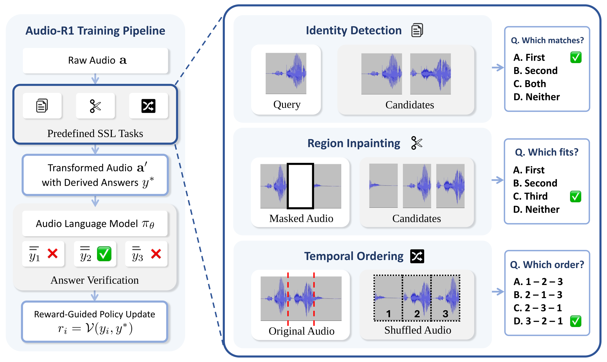

Audio-R1 derives verifiable rewards from self-supervised audio tasks. Because each answer is fixed while the audio is being constructed, rewards need no human annotation or external supervision.
Abstract
Reasoning is increasingly important for large audio-language models (LALMs), yet remains relatively underexplored compared with text-only and vision-language models. We introduce Audio-R1, a reinforcement learning (RL) post-training framework that revisits audio self-supervised learning as a source of verifiable rewards for improving audio understanding and reasoning task performance. Audio-R1 uses answers automatically determined during the construction of self-supervised tasks to verify model responses and compute rewards. Experiments across multiple LALMs and diverse audio benchmarks show consistent performance gains, while ablations demonstrate the benefits of each self-supervised task and additional gains from joint training. While both supervised fine-tuning and Audio-R1 improve self-supervised task accuracy, Audio-R1 further improves performance on downstream tasks distinct from the training tasks. These results highlight the potential of RL post-training with self-supervised audio tasks to improve downstream performance and reasoning-trace quality.
Demo
Audio-R1 trains on three self-supervised tasks designed to encourage the use of acoustic, temporal, and semantic cues. Each task's answer is determined during construction, so a rule-based verifier can check any response and turn it directly into a reward.
🎯 Identity Detection
Given an anchor clip and candidate clips, decide which candidates come from the same source recording as the anchor.
🧩 Region Inpainting
A segment is removed from a clip; the model picks the candidate segment that fills the gap, using surrounding context and acoustic continuity.
⏱️ Temporal Ordering
Segments cut from one continuous recording are shuffled; the model recovers their original chronological order.
Audio Input
Candidates
▶ Click a waveform to play from that point.
Question
Task answers are determined during construction from the source-recording identity, the removed audio segment, or the original segment order. Examples are drawn from our in-domain test sets, built from MMAU-mini recordings.